Screenshot-Tour
Fünf Schritte der App
Gerenderte Ansichten der nativen iOS- und iPadOS-App, aufgenommen im App-Unit-Testziel auf Simulatoren. Alle Sitzungs-, Einwilligungs- und Reflexionswerte sind synthetische Fixtures.
Es handelt sich um Simulator-Renderings, nicht um einen Test auf physischer Hardware. Die Tour zeigt keine Kameravorschau, keine echten Personen und keine validierten pädagogischen Ergebnisse. Sie ersetzt weder die interaktive Demo noch eine Prüfung auf einem Gerät.
1 · Sitzung vorbereiten
SetupKontext, Zweck, Dauer und Betriebsmodus eingeben, zweckgebundene Einwilligung erfassen und die Startbedingungen prüfen.
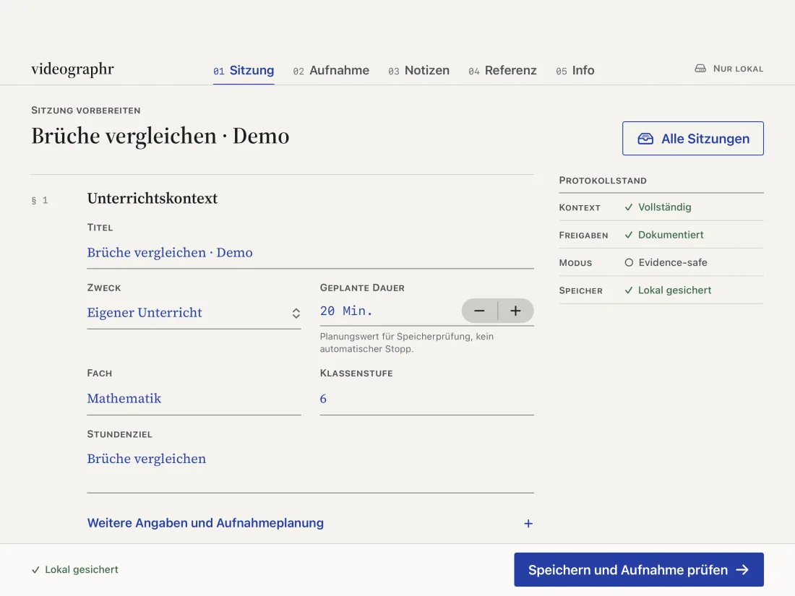
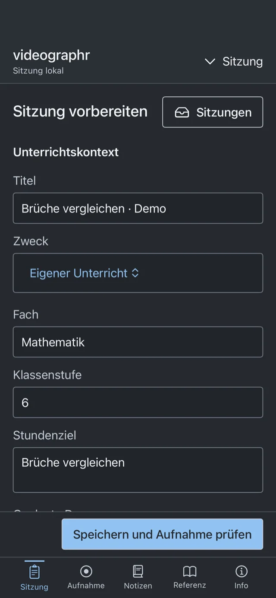
2 · Aufnahme prüfen und starten
LiveDirekte Aufnahmesignale beobachten, Sprechprobe durchführen und einen kontinuierlichen Take starten oder stoppen. Diese Werte beschreiben Bedingungen, nicht Unterrichtsqualität.
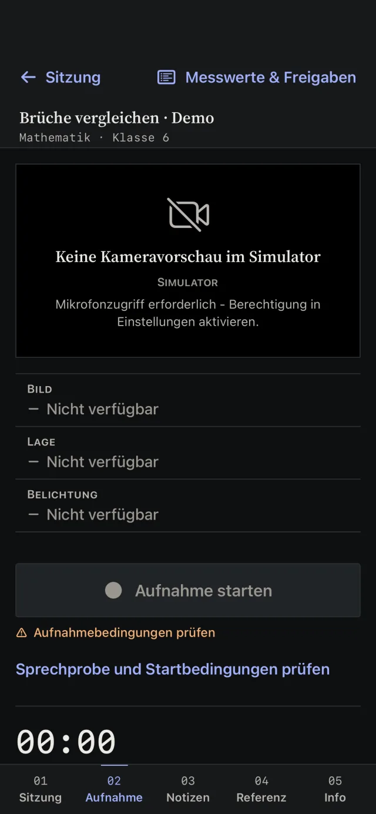
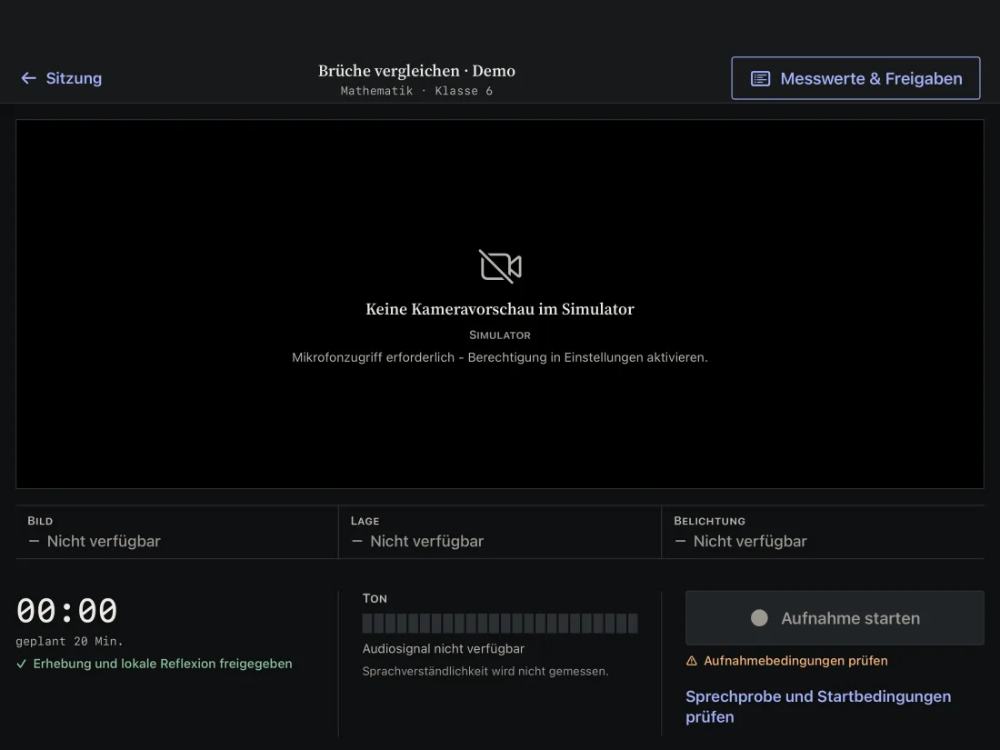
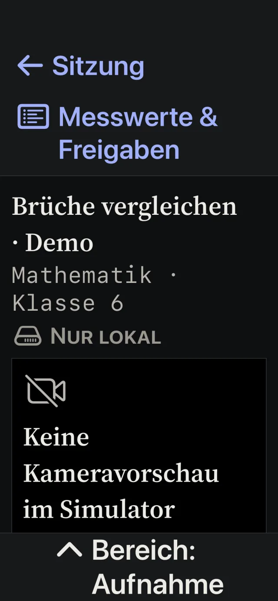
3 · Reflektieren
ReflektierenLokales Medium auswählen, wiedergeben und spulen, einen Zeitabschnitt markieren und eine menschliche Beobachtung mit Autor zuordnen.
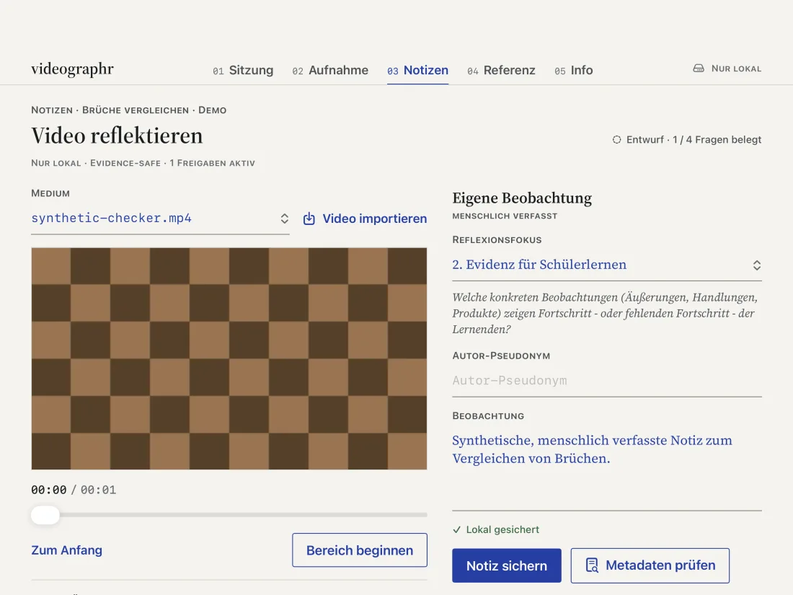
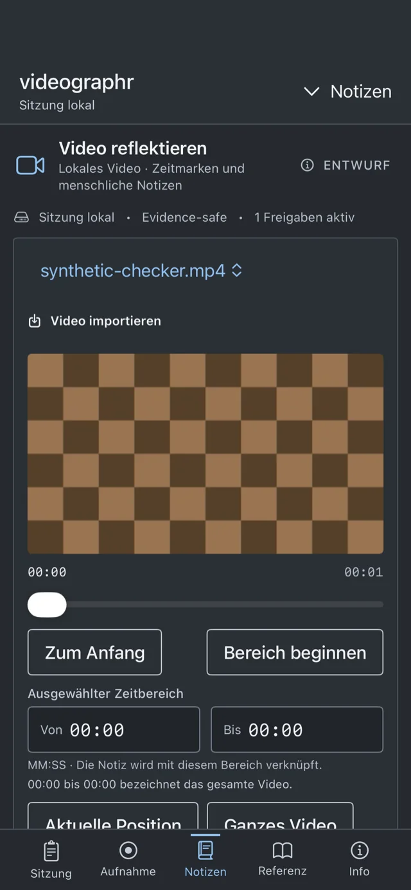
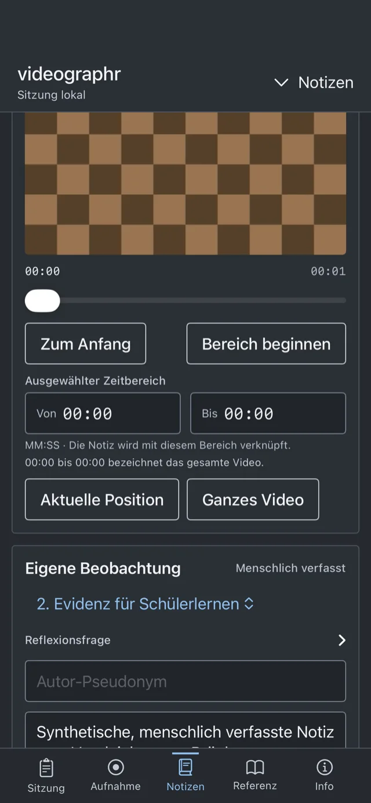
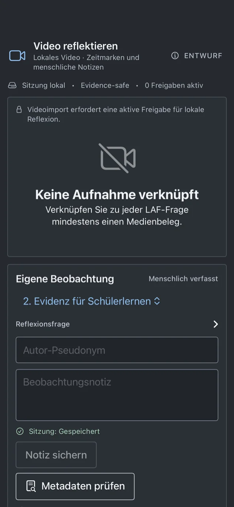
4 · Metadaten prüfen und teilen
ExportErforderliche Bereiche, Ausschluss des Videos und das dauerhafte Share-Ergebnis anzeigen. Ein bestätigter Systemvorgang ist kein Zustellnachweis.
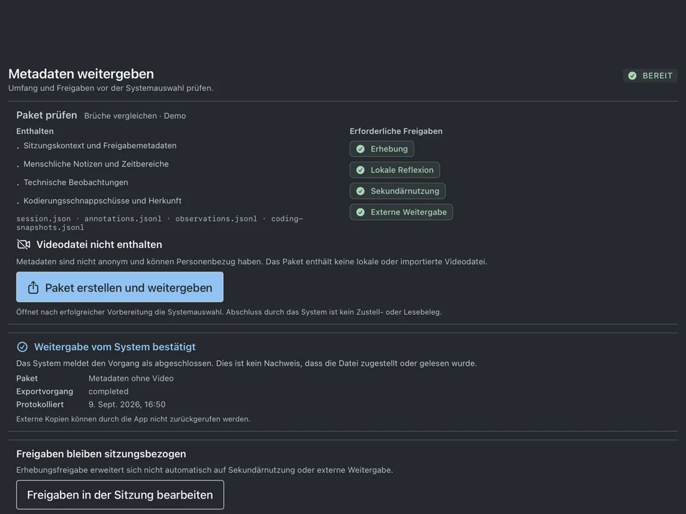
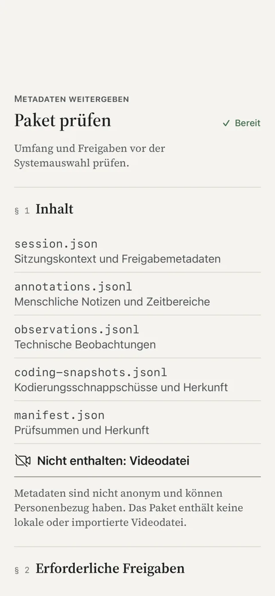
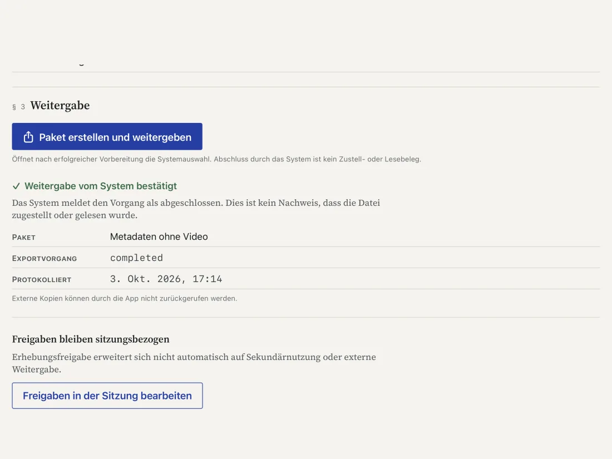
5 · Große Systemschrift
BarrierefreiheitBei vergrößerter Systemschrift werden Navigation und Inhalte umgebrochen. Diese Ansichten sind kein vollständiger Barrierefreiheitsnachweis.
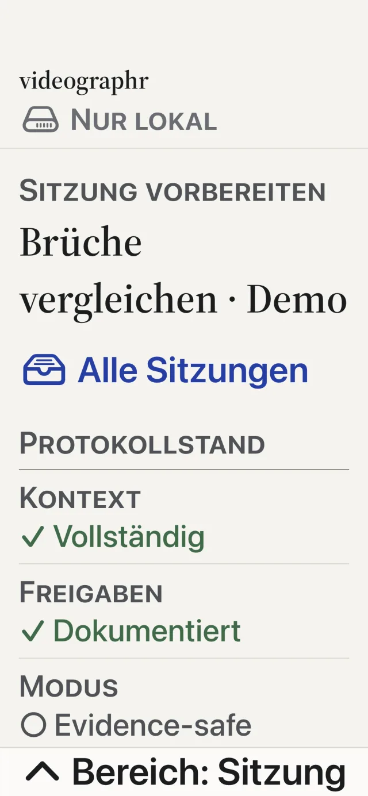